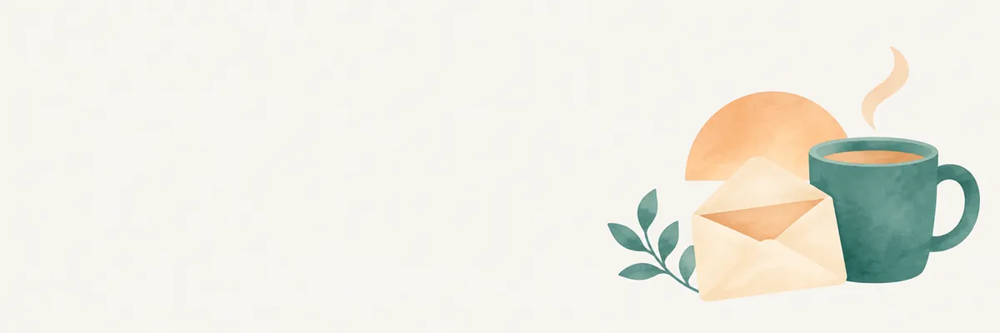

불러오는 중…
카드의 🔍 GPT로 더 자세히, ❓ 물어보기 단추를 누를 때만 쓰여요. 키는 이 브라우저 안에만 저장되고, OpenAI 말고는 어디로도 보내지 않아요. 매일 자동 수집에는 쓰이지 않아요.
💡 안심하려면 OpenAI 사이트의 사용 한도에서 한 달 한도(예: 5달러)를 걸어 두세요. 폰을 잃어버리면 OpenAI 사이트에서 이 키를 지우면 돼요.